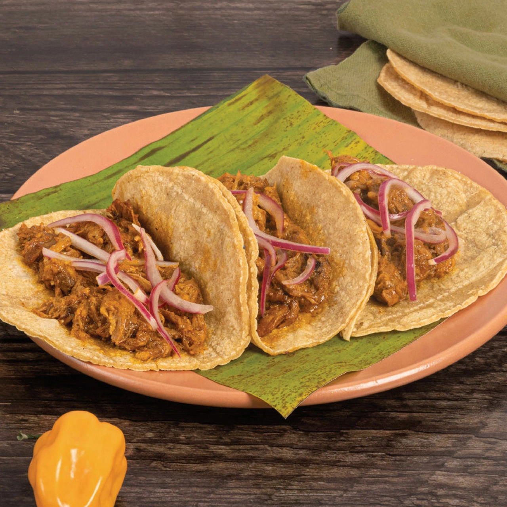

Mexican Cochinita Pibil
Cochinita pibil is a slow-roasted pork dish from Yucatán, Mexico, marinated in achiote and citrus, then wrapped in banana leaves and traditionally cooked underground,is ideal to share with family

Ingredients and Tools:
Ingredients:
Tools:
- Blender or food processor
- Large mixing bowl
- Baking dish or Dutch oven
- Aluminum foil or banana leaves
- Knife and cutting board
- Oven
- Tongs or seving spoon
Steps:
Make the marinade:
- In a blender, mix achiote paste, orange juice, vinegar, garlic, oregano, cumin, and salt. Blend until smooth.
Marinate the pork:
- Place pork chunks in a large bowl or baking dish.
- Pour the marinade over the meat and mix to coat evenly.
- Cover and refrigerate for at least 4 hours, preferably overnight
Wrap and cook:
- preheat the oven to 160°C (320°F).
- Line a baking dish with banana leaves (or foil), place the pork and marinade inside, and cover with more leaves or foil.
- Cover tightly and bake for 3-4 hours until the pork is tender and shreds easily.
Prepare pickled onions(optional):
- Combine sliced red onions, vinegar, water, salt, and optional spices in a bowl.
- Let sit for at least 30 minutes.
Shred and serve:
- Shred the pork with two forks and mix with its juices
- Serve on warm corn tortillas with pickled onions, salsa and beans if desired
Home